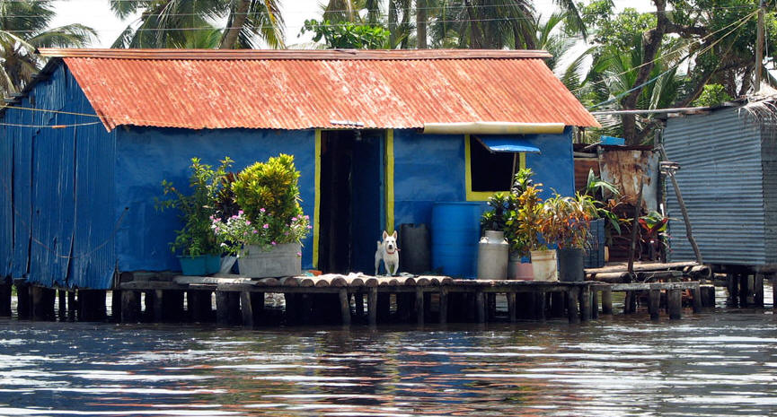
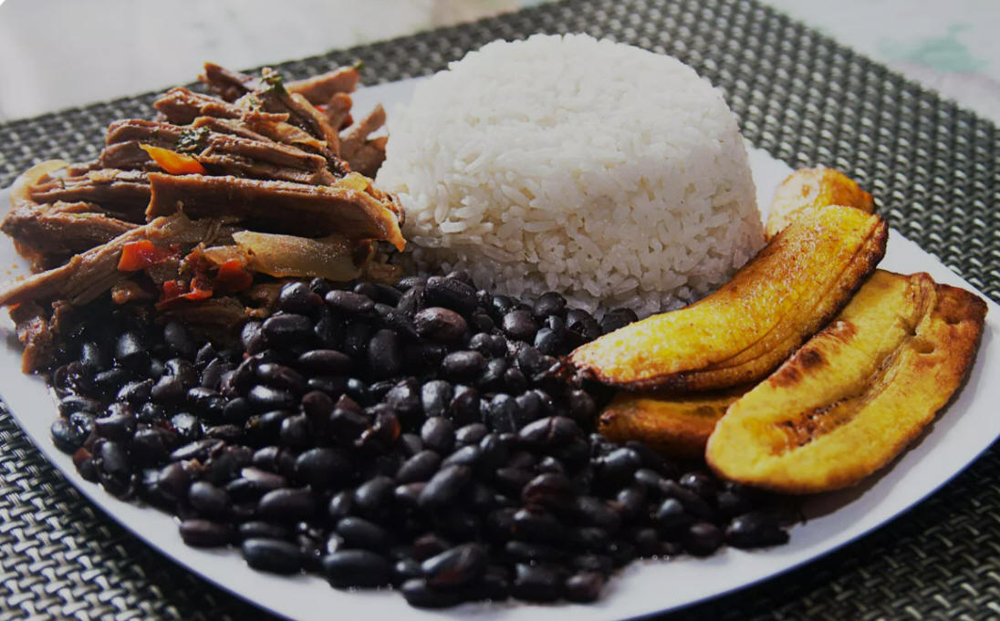

| Quick Facts | Home | Pictures | Information |
Daily Life
| Venezuelans adopted a contemporary urban lifestyle when they relocated from the countryside to the metropolis, where they coexisted with emerging impoverished ranchos and sizable middle-class districts. In the 1950s and 1960s, oil brought prosperity to many Venezuelans from the middle and upper classes, allowing them to purchase homes and vehicles and travel with ease, particularly to the United States. But that carefree lifestyle has been disrupted by the economic slump since the 1980s, and poverty has increased. |  |
|  Food in Venezuela |
Criollo, or "Creole," is the term used frequently in Venezuela to describe the blending of African, European, and indigenous cultural traditions; yet, in other Latin American contexts, the phrase refers to those with European heritage. Venezuelans take great pride in their criollo cuisine, dances, and music. Traditional dishes include hallaca, which is sweet cornmeal dough fried in banana leaves, and arepas, which are cornmeal breads. Other common dishes include tamarinds and passion fruit, tequeños (cheese pastries), fried plantain chips with a stew of beef, rice, and black beans, and pulpo (octopus) cooked in citrus juice. |
| Talkarí de chivo, or "kid stew," and
other more complex meals are eaten during the pre-Lenten Carnival.
Popular beverages include locally brewed rum and beer, as well as coffee
offered in a variety of forms with names that correspond to the quantity
of milk added to the coffee.Venezuelans like a lot of North American
music, but they also frequently hear Caribbean salsa and merengue. The
joropa is the national traditional dance and musical style of Venezuela,
however each area has its own unique musical expression.
|
.jpg) Traditional dance of Venezuela |
| Page 1 | Page 2 | Page 3 | Page 4 | Page 5 | Page 6 | Page 7 |